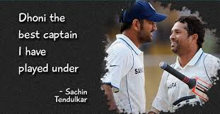

He is the captain of Chennai Super Kings (CSK) in the Indian Premier League, leading them to the final on 10 occasions and winning in the 2010, 2011, 2018, 2021 and 2023 editions of the league, as well as winning the Champions League T20 two times, in 2010 and 2014. He is the 7th cricketer have scored more than 5,000 runs in the IPL, as well as being the first wicket-keeper to do so.
Dhoni received India's highest sports honour, the Major Dhyanchand Khel Ratna Award in 2008 for his outstanding achievements and the Government of India honoured him India's fourth civilian award Padma Shri in 2009 and third civilian award Padma Bhushan in 2018. He is the only cricket captain in the world to win all three of the Cricket World Cup, ICC Men's T20 World Cup and ICC Champions Trophy. Dhoni holds an honorary rank of Lieutenant Colonel in the Parachute Regiment of the Indian Territorial Army,[16] it was presented to him by the Indian Army in 2011 for his service to the nation as a cricketer.[17] Dhoni is considered one of the most popular cricketers in the world.[18] He is a leading brand endorser celebrity in India. The 2016 film, M.S. Dhoni: The Untold Story was made as a biopic on his life.
Ranchi, Bihar (now in Jharkhand) and hails from a Hindu Rajput family to parents from Uttarakhand.[5][6] He is the youngest of three children of Pan Singh and Devaki Devi.[22][23][24][7] His paternal village Lwali, is in Jainti Tehsil, Lamgara block of the Almora District of Uttarakhand.[25] His parents moved from Uttarakhand to Ranchi, Jharkhand where his father worked as a pump operator in junior management position in MECON Colony situated in Doranda area in Ranchi.[26] Unlike Dhoni, his uncle and cousins spell their surname "Dhauni"..